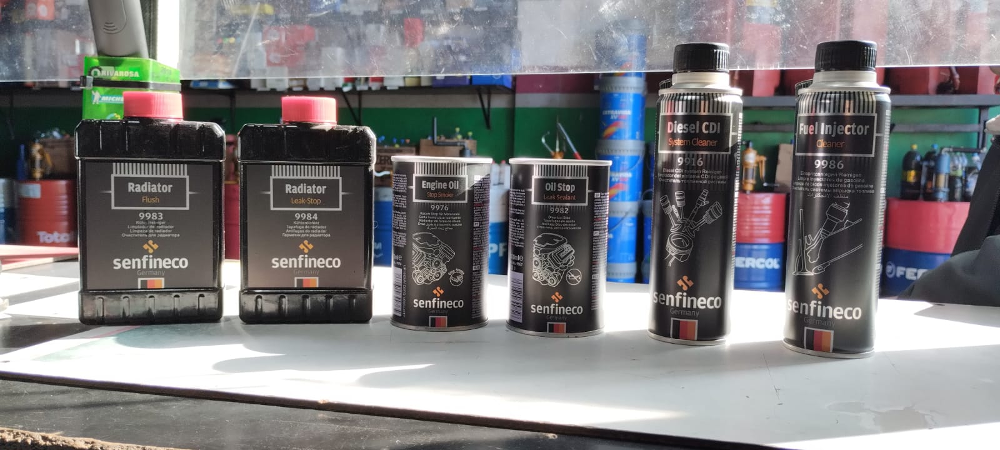
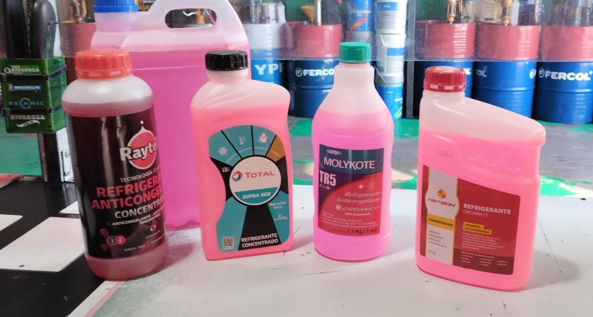
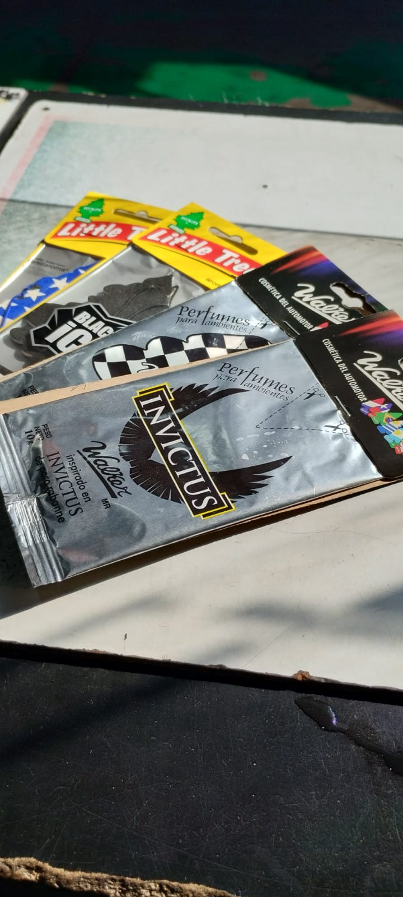

Preguntas frecuentes:
Si, totalmente, controlamos todos los liquidos del vehiculo, como aceite, refrigerantte, liquido de freno,aceite hidrauldico, etc.
De momento no, solamente realizamos service a autos,furgones, SUV, camionetas 4X4, camiones y colectivos
Si, vendemos aceites minerales, semi-sinteticos, sinteticos.Tambien aceites exclusivos para vehiculos diesel o vehiculos con GNG. Estos aceites los puede comprar envasados o a granel.
Si, tenemos limpias inyectores,aditivos para el consumo de aceite, antifricion, sella grietas como puede ser del radiador o del sistema hidrauldico, limpia radiadores, refrigerantes, mejoradores de combustible, etc.
El tiempo de duracion va a depender del vehiculo y de los filtros que se quieran cambiar, pero en promedio de 20 a 40 minutos
No, los service se realizan en el momento.
Si, algunos como cubre volantes, alfombras, tuercas antirrobo, lamparas, perfumes para el interior, productos para la limpieza y restauracion del vehiculo.
SI, porsupuesto.





